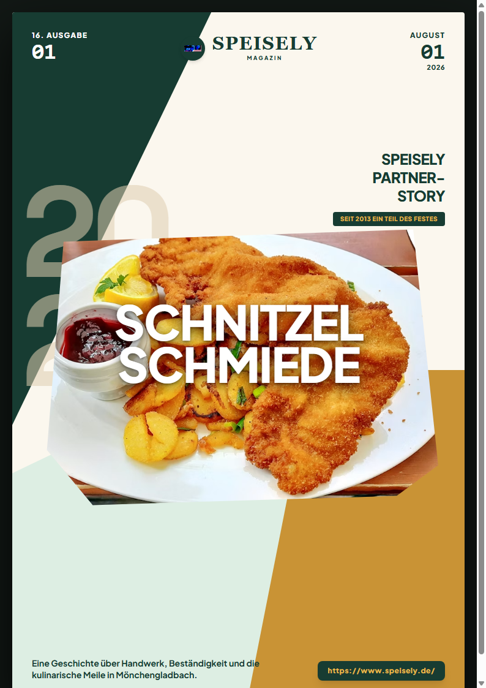

Speisely Magazin · Food & Culture
Partner-Story · MG
Heiß, laut, fettig – und verdammt gut.
Warum die Schlange vor dem Schnitzel-Stand immer die längste ist
Es ist 19:30 Uhr auf der Festmeile. Die Musik vom Hauptplatz wummert herüber, Lichterketten flammen auf und überall liegt dieser unverwechselbare Duft: geschmolzene Butter, frische Zitrone und das heiße Zischen frischer Panade.
„Wenn auf der Festmeile die ersten Pfannen zischen, zählt nur eines: Heiß, goldbraun und saftig.“
Am Stand herrscht Hochbetrieb im Minutentakt. Hier gibt es ehrliches Handwerk für echte Genießer.
Der erste Biss liefert genau diesen satten Crunch. Außen die wellige, goldbraune Kruste, innen zartes Qualitätsfleisch, abgerundet durch frische Zitrone.
Frische ohne Kompromisse
Während viele Großveranstaltungen auf vorgegarte Ware setzen, hält die Schnitzel Schmiede an der traditionellen Einzelzubereitung fest. Jedes Schnitzel wird frisch paniert und heiß serviert.
Tradition seit 2013
Seit 2013 ist das Team fester Bestandteil des EineStadt-Fests in Mönchengladbach.

Frisch aus der Pfanne serviert.
„Ein gutes Schnitzel braucht keine Geheimnisse“, erklärt das Team. „Gutes Fleisch, lockere Panade und die richtige Hitze in der Pfanne.“
02 | Speisely Magazin
Ausgabe 01 · 2026
⚡
SCHNITZEL SCHMIEDE
Gastronomie · Catering · Lieferservice
Echtes Handwerk.
Heißer Crunch.
Für dein Event in NRW.
Vom legendären EineStadt-Fest direkt zu deiner Veranstaltung: Frisches Schnitzel-Catering und Partyservice für 20 bis 500+ Personen.
- / Frisch aus der Pfanne: Frisch paniert und goldbraun gebraten.
- / Kompletter Event-Service: Inklusive Pommes, hausgemachten Saucen & Salaten.
- / Über 13 Jahre Erfahrung: Mehr als 100.000 begeisterte Gäste.
Auf Speisely entdecken:
Partner auf Speisely ansehen ➔
In Kooperation mit Schnitzel Schmiede
Speisely.de | 03
Der Faire Marktplatz
Gutes Essen entdecken. Lokale Partner finden.
Verbinde dich mit den besten Restaurants, Caterern und Eventanbietern deiner Region auf speisely.de.
© 2026 Speisely · Ausgabe 01 · Alle Rechte vorbehalten